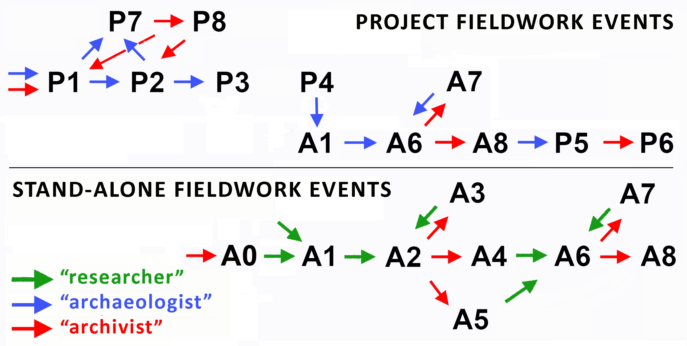

| Stav | Název | Vysvětlivka | Provádí |
|---|---|---|---|
| P1 | Zapsaný | Za zapsaný je považován takový záznam o projektu, který obsahuje údaje o lokalizaci, plánovaném zahájení a objednateli, vč. rámcové lokalizace projektu v mapě. Projekt lze zapsat pomocí formuláře Zapsat projekt. Zapsaný projekt je dostupný pro přihlášení kteroukoli oprávněnou organizací pomocí obrazovky Přihlásit projekt. V momentě zápisu je projektu přidělen definitivní identifikátor. | Archeolog |
| P2 | Přihlášený | Projekt vybraný a přihlášený ke konkrétní oprávněné archeologické organizaci pomocí obrazovky Přihlásit projekt. Výběrem konkrétního projektu, doplněním povinných údajů a potvrzením se oprávněná organizace zavazuje k provedení výzkumu. Projekt není dostupný ostatním oprávněným organizacím k úpravám. V této fázi je možné volně připojovat projektovou dokumentaci. V této fázi je též nutné vyplnit korektní údaje o památkové ochraně. | Archeolog |
| P3 | Zahájený v terénu | Postihuje běžící projekty, u nichž bylo pomocí obrazovky Zahájit terén zadáno datum zahájení terénních prací. U těchto projektů je možno k projektu přidávat Karty akce pro podávání údajů o odborných výsledcích projektu. | Archeolog |
| P4 | Ukončený v terénu | Projekt je považován za ukončený po skončení jeho terénní části. Datum ukončení je do systému zadáváno pomocí obrazovky Ukončit terén a od tohoto data začíná běžet lhůta pro odevzdání nálezové zprávy. U těchto projektů je možno k projektu přidávat Karty akcí pro podávání údajů o odborných výsledcích projektu. | Archeolog |
| P5 | Uzavřený | Projekt je uzavřený po vyplnění potřebných údajů k jednotlivým akcím, včetně prostorového vymezení, připojení všech nálezových zpráv a odeslání ke kontrole pomocí obrazovky Uzavřít projekt. | Archeolog |
| P6 | Archivovaný | Projekt je automaticky archivován, jakmile byl uzavřený pracovníkem oprávněné organizace a jsou archivovány všechny obsažené Karty akcí. Archivované projekty jsou viditelné ve Vyhledávání. | Archivář |
| P7 | Navržen ke zrušení | Projekt byl uživatelem pomocí Karty projektu navržen ke zrušení, neboť nedošlo k jeho realizaci, nebo se jedná o chybný zápis. | Archeolog |
| P8 | Zrušený | Projekt byl správcem systému pomocí Karty projektu zrušen, neboť nedošlo k jeho realizaci, nebo se jedná o chybný zápis. | Archivář |
7 Procesní pravidla a stavy
Jedním z hlavních poslání AMČR je zabezpečit nutnou agendu a evidenci archeologických akcí prováděných na území ČR. V aplikaci proto nejsou obsažena pouze data, která lze považovat za archivní, ale také rozpracované záznamy, které postihují právě probíhající, případně nedávno realizované výzkumy. Pro sběr a užívání dat v AMČR platí tzv. procesní pravidla, která říkají, jaký typ uživatele spravuje danou datovou třídu, v jaký okamžik vkládá data a jakého cíle má být dosaženo.
Pro označení fáze zpracování záznamů slouží tzv. procesní stavy, které jsou přidělovány všem záznamům v základních datových třídách (Projekty, Akce, Lokality, Dokumenty, Bibliografie, PIAN). Procesní stav určuje, kdo může daný záznam zobrazit, kdo jej může editovat, jaké funkce jsou pro práci se záznamem dostupné a zároveň jaké kroky je třeba učinit pro plnou archivaci záznamu. Každému ze stavů také odpovídá určitý okruh dat, která je v daném okamžiku možno (či nutno) vložit, a určitá práva a povinnosti konkrétních uživatelů.
Procesním stavem rozumíme dílčí fázi archeologické (terénní) aktivity, což lze na obecnější rovině chápat jako specifickou fázi vzniku archeologické informace. Např. každý projekt musí být nejprve zapsán do systému (stav P1), a to s některými povinnými popisnými údaji. Zapsaný projekt si může některá z oprávněných organizací rezervovat k provedení výzkumu (P2), přičemž doplňuje některé údaje a zároveň dočasně omezuje dostupnost jiných pro ostatní uživatele (např. osobní údaje týkající se stavebníka). Daná oprávněná organizace nyní získává povinnost zahájit a oznámit terénní práce (P3), informovat o jejich ukončení (P4) a v zákonné lhůtě podat závěrečnou informaci spolu s nálezovou zprávou (P6). Poté archivář rozhoduje, zda podané podklady je třeba vrátit k doplnění/přepracování (P7), nebo je možno je uznat za dostatečné a archivovat (P8).
Podobným způsobem probíhá i životní cyklus akcí, který má různé varianty, a to podle typu akce (projektová akce/samostatná akce). Projektové akce procházejí pouze stavy A1-A2-A6-A7-A8, protože podávat závěrečnou informaci o výsledcích výzkumu bez předepsané nálezové zprávy není povoleno. U samostatných akcí, převážně starých výzkumů, kde zhotovení úplné nálezové zprávy je už málo pravděpodobné, je tato praxe povolena a jejich životní cyklus se tedy skládá ze všech uvedených kroků. V poněkud jednodušší podobě se procesní stavy vyskytují i u záznamů dalších datových tříd.
Přechod od jednoho procesního stavu k druhému je řízen interakcemi systému, uživatele a archiváře. Systém eviduje datum přechodu jednotky z jednoho stavu do druhého a uživatele, který přechod provedl. V případě stavů, které mohou být nabývány opakovaně (např. „vrácení zprávy o akci k dopracování“) se eviduje i historie změn a důvody, které k nim vedly.

Procesní stavy projektů
Procesní stavy akcí
| Stav | Název | Vysvětlivka | Provádí |
|---|---|---|---|
| A0 | Nerevidovaná | Akce byla do systému vložena dávkově pomocí importu a věcný obsah záznamu čeká na kontrolu. Nerevidované akce jsou viditelné ve Vyhledávání a jsou opatřeny definitivním identifikátorem. | Administrátor |
| A1 | Rozepsaná | Akce byla založena, avšak na Kartě akce nebyly doplněny všechny údaje a akce nebyla postoupena k dalšímu zpracování. Identifikátor akce je pouze dočasný a definitivní je přidělen až po přechodu akce do libovolného dalšího stavu. | Badatel |
| A2 | ZAA podaná | Karta akce obsahuje všechny potřebné údaje, avšak akce byla odeslána k archivaci bez nálezové zprávy z důvodu její nedostupnosti. | Badatel |
| A3 | ZAA vrácená | Akce byla správcem systému vrácena k doplnění chybných či chybějících údajů na Kartě akce. | Archivář |
| A4 | ZAA archivovaná | Akce byla po kontrole všech údajů správcem systému archivována bez nálezové zprávy. Dodání nálezové zprávy již v budoucnu nelze očekávat. Akce v tomto stavu jsou viditelné ve Vyhledávání. | Archivář |
| A5 | NZ odložená | Akce byla po kontrole všech údajů správcem systému archivována bez nálezové zprávy, která však bude dodána v budoucnu. Akce v tomto stavu jsou viditelné ve Vyhledávání. | Archivář |
| A6 | NZ podaná | Akce byla odeslána ke kontrole správci systému a obsahuje všechny potřebné údaje, včetně nálezové zprávy. | Badatel |
| A7 | ZAA/NZ vrácená | Akce byla správcem systému vrácena k doplnění chybných nebo chybějících údajů na Kartě akce či v nálezové zprávě. | Archivář |
| A8 | Archivovaná | Akce byla po kontrole všech údajů správcem systému archivována spolu s nálezovou zprávou. Akce v tomto stavu jsou viditelné ve Vyhledávání. | Archivář |
Procesní stavy lokalit
| Stav | Název | Vysvětlivka | Provádí |
|---|---|---|---|
| L1 | Nerevidovaná | Lokalita byla do systému vložena dávkově pomocí importu a věcný obsah záznamu čeká na kontrolu. Nerevidované lokality jsou viditelné ve Vyhledávání a jsou opatřeny definitivním identifikátorem. | Administrátor |
| L2 | Zapsaná | Lokalita byla založena, avšak na Kartě lokality nebyly doplněny všechny údaje a lokalita nebyla dosud zveřejněna. Identifikátor lokality je pouze dočasný. | Archivář |
| L3 | Archivovaná | Lokalita byla po kontrole všech údajů správcem systému archivována. Lokality v tomto stavu jsou viditelné ve Vyhledávání a opatřeny definitivním identifikátorem. | Archivář |
Procesní stavy dokumentů
| Stav | Název | Vysvětlivka | Provádí |
|---|---|---|---|
| D1 | Nerevidovaný | Dokument byl do systému vložen dávkově pomocí importu a věcný obsah záznamu čeká na kontrolu. Nerevidované dokumenty jsou viditelné ve Vyhledávání a jsou opatřeny definitivním identifikátorem. | Administrátor |
| D2 | Zapsaný | Dokument byl založen, avšak na Kartě dokumentu nebyly doplněny všechny údaje a dokument nebyl dosud zveřejněn. Identifikátor dokumentu je pouze dočasný. | Badatel |
| D3 | Archivovaný | Dokument byl po kontrole všech údajů správcem systému archivován. Dokumenty v tomto stavu jsou viditelné ve Vyhledávání a opatřeny definitivním identifikátorem. | Archivář |
Procesní stavy externích zdrojů
| Stav | Název | Vysvětlivka | Provádí |
|---|---|---|---|
| B1 | Nerevidovaný záznam | Bibliografický záznam (externí zdroj) byl do systému vložen dávkově pomocí importu a věcný obsah záznamu čeká na kontrolu. Nerevidované záznamy jsou viditelné ve Vyhledávání a jsou opatřeny definitivním identifikátorem. | Administrátor |
| B2 | Zapsaný | Bibliografický záznam (externí zdroj) byl založen, avšak na Kartě bibliografického záznamu nebyly doplněny všechny údaje a záznam nebyl dosud zveřejněn. Identifikátor záznamu je pouze dočasný. | Badatel |
| B3 | Potvrzený | Bibliografický záznam (externí zdroj) byl po kontrole všech údajů správcem systému potvrzen. Záznamy v tomto stavu jsou viditelné ve Vyhledávání a opatřeny definitivním identifikátorem. | Archivář |
Procesní stavy jednotek PIAN
| Stav | Název | Vysvětlivka | Provádí |
|---|---|---|---|
| N | Nepotvrzený | PIAN byl vytvořen uživatelem při zápisu akce či projektu, avšak nebyl dosud ověřen správcem systému. Identifikátor PIAN je v tomto stavu pouze dočasný. | Badatel |
| P | Potvrzený | PIAN byl zkontrolován správcem systému a byl mu přidělen definitivní identifikátor. | Archivář |